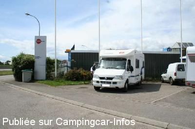
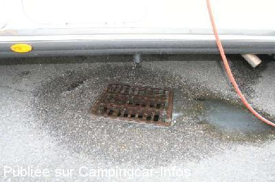
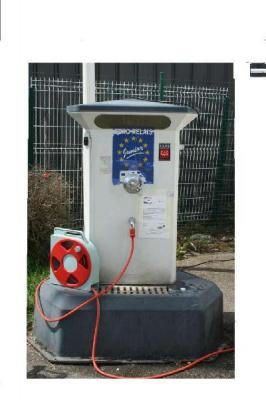

ASN = Aire de services avec stationnement nuit possible de :
BENFELD
(N° 196)
Accès/adresse :
9 rue de Hollande, D1083
67230 BENFELD
67230 BENFELD
Latitude : (Nord) 48.37762° Décimaux ou 48° 22′ 39′′
Longitude : (Est) 7.59769° Décimaux ou 7° 35′ 51′′
Tarif : Stationnement, services : gratuits
Type de borne : EURO-RELAIS
Services :


Poubelle
Autres informations :
Ouverte toute l'année
Aire de CLC Alsace Concessionnaire Camping-Cars
Tel : + 33(0)388 740 730
clcalsace@clc-loisirs.com
http://www.clc-loisirs.com/page-248/alsace.html
Parc d'activités des Nations
(en bordure de la '4 voies') sens Strasbourg/Sélestat

Le 21/09/2007 par Fanfan

Le 21/09/2007 par Fanfan

Le 21/09/2007 par Fanfan
de
brigitte te pascal de la somme
le 13/02/2014 :
Merci au responsable de cette concession pour avoir pris le temps de s'occuper de notre cas (mauvaise gestion du refrigerateur ,alors que nous pensions à un probleme de batterie ,merci à steve responsable atelier .
le 11 fevrier 2014
Merci au responsable de cette concession pour avoir pris le temps de s'occuper de notre cas (mauvaise gestion du refrigerateur ,alors que nous pensions à un probleme de batterie ,merci à steve responsable atelier .
le 11 fevrier 2014
de
Hymer584
le 09/05/2011 :
06/05/2011 : A nouveau de passage, avons apprécié une nouvelle fois cette aire gratuite (électicité également, bien utile en case de panne de batteries comme celà nous est arrivé pour les marchés de Noel en 2009). De plus concessionnaire très sérieux et très compétitif. En revanche, confirmons que le parking d'Intermarché est beaucoup plus confortable pour passé la nuit.
06/05/2011 : A nouveau de passage, avons apprécié une nouvelle fois cette aire gratuite (électicité également, bien utile en case de panne de batteries comme celà nous est arrivé pour les marchés de Noel en 2009). De plus concessionnaire très sérieux et très compétitif. En revanche, confirmons que le parking d'Intermarché est beaucoup plus confortable pour passé la nuit.
de
G.Claude
le 14/07/2008 :
Passons souvent pour faire la vidange avant de rentrer.
Concessionnaire sympa.
Passons souvent pour faire la vidange avant de rentrer.
Concessionnaire sympa.
de
Choupette
le 02/03/2008 :
De passage pour faire les vidanges avant de rentrer à notre domicile. Propre avec tout ce qu'il faut.
De passage pour faire les vidanges avant de rentrer à notre domicile. Propre avec tout ce qu'il faut.
de
patounet30
le 05/01/2008 :
si le concessionnaire est bien plaçé pour son activité,il nous est difficile de nous attarder à cause de la nationale,mais il a le mérite d'exister car rares sont les concessionnaires qui s'inquitent de nos besoins gratuitement,alors moi je dis "chapeau" et merçi!
si le concessionnaire est bien plaçé pour son activité,il nous est difficile de nous attarder à cause de la nationale,mais il a le mérite d'exister car rares sont les concessionnaires qui s'inquitent de nos besoins gratuitement,alors moi je dis "chapeau" et merçi!
de
Fanfan
le 21/09/2007 :
C'est une borne gratuite EURO-RELAIS, pour dormir, il suffit d'aller quelques rues plus loin dans la zône industrielle ou sur le parking d'Intermarché. Dans ce super marché (aux heures d'ouverture 9h à 18h30 et 17 le samedi - fermé dimanche) il y a des WC, un self le midi, une boulangerie, un point presse ainsi qu'un distributeur de billet. Sur le parking une station service avec vente de bouteilles de gaz.
C'est une borne gratuite EURO-RELAIS, pour dormir, il suffit d'aller quelques rues plus loin dans la zône industrielle ou sur le parking d'Intermarché. Dans ce super marché (aux heures d'ouverture 9h à 18h30 et 17 le samedi - fermé dimanche) il y a des WC, un self le midi, une boulangerie, un point presse ainsi qu'un distributeur de billet. Sur le parking une station service avec vente de bouteilles de gaz.
de
fefe
le 14/08/2007 :
Utile pour les services ! impossible pour la nuit ! 2x2 voies a 20 metres! tres bonne initiative de ce concessionnaire !
Utile pour les services ! impossible pour la nuit ! 2x2 voies a 20 metres! tres bonne initiative de ce concessionnaire !